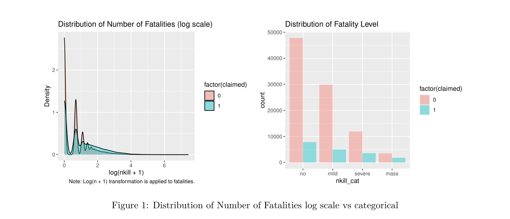
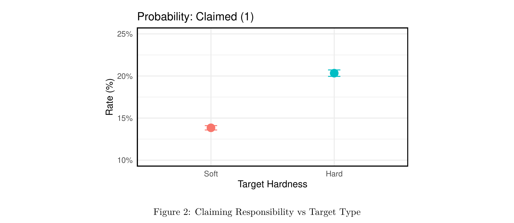
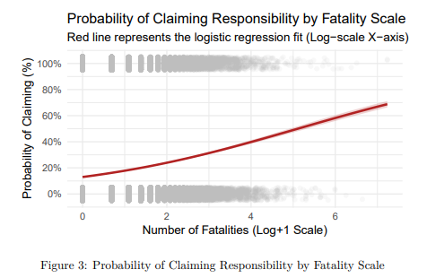
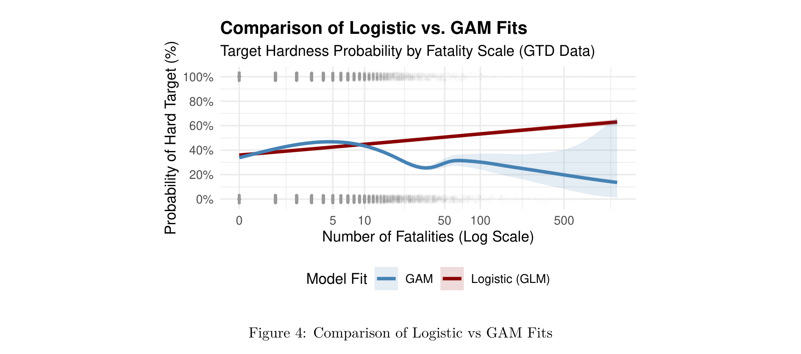
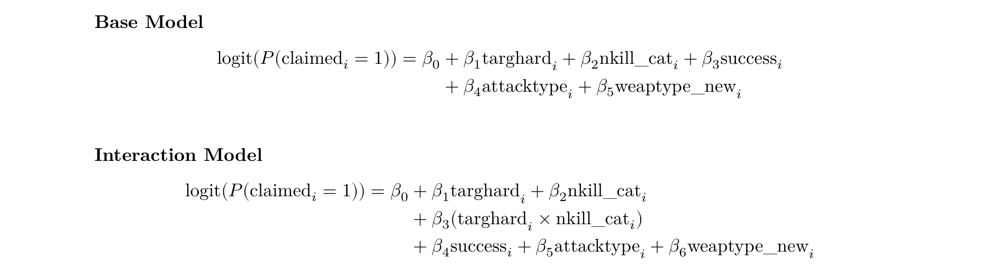
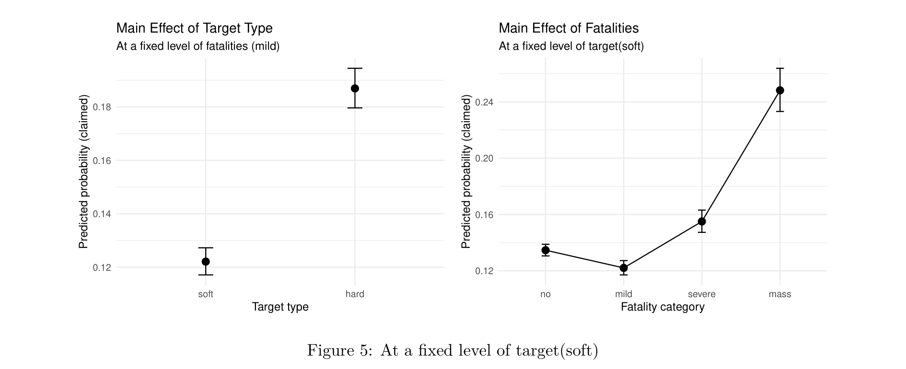
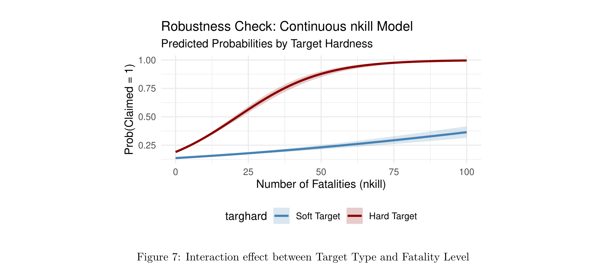

Claiming Responsibility in Global Terrorism: Target Hardness, Lethality, and Strategic Signaling
1. Statement of Purpose
Terrorism is commonly understood as a form of political communication in which violence is used to convey grievances and demands to a broader audience. In this sense, claiming responsibility for an attack is a crucial mechanism through which perpetrators signal their identity and intentions. Yet, a substantial number of terrorist attacks go unclaimed, presenting a puzzle for existing theories of terrorism. If terrorism is designed to communicate, why do perpetrators sometimes conceal their identity?
Changes in the international environment, particularly the expansion of counterterrorism efforts and the increased risk of retaliation, have made public attribution more costly (Hoffman 1997). In this context, the trade-off between organizational security and political influence becomes more pronounced (McCormick 2003). As a result, terrorist organizations may strategically withhold claims when attacks involve civilian targets, as such actions carry heightened political risks. At the same time, observational evidence suggests that some of the most lethal attacks are also less likely to be claimed (Abrahms and Conrad 2017).
What factors, then, influence the probability of a claim? By revealing the motivation behind claiming responsibility, we can identify a key factor in the hidden dynamics of terrorist attacks; when combined with other existing data, this is expected to provide insights into the targets, scope, and methods of terrorist operations.
2. Data Description
To answer our research question, we obtained access to the Global Terrorism Database (GTD),1 a comprehensive and exclusive dataset curated by the National Consortium for the Study of Terrorism and Responses to Terrorism (START). The GTD is an event-level database containing more than 200,000 records of terrorist attacks that took place around the world since 1970. It is maintained by the National Consortium for the Study of Terrorism and Responses to Terrorism (START) at the University of Maryland. It is also the basis for other terrorism-related databases, such as the Global Terrorism Index (GTI) published by the Institute for Economics and Peace. As of 2025, the GTD is closed and is only accessible by requesting use via giving personal information.
2.1. Variables
Our analysis covers terrorist incidents recorded between 1970 and 2021, yielding a total of 111,192 observations. From the 135 variables available in the original Global Terrorism Database (GTD), we selected five primary variables for our empirical model. The dependent variable is Claimed Responsibility (claimed), a dichotomous measure indicating whether a perpetrator or entity explicitly took credit for the incident (1 = Yes, 0 = No).
The primary independent variable, Target Type (targhard), was re-operationalized from the original categorical data (targtype1) to distinguish between "soft" and "hard" targets—a distinction widely utilized in terrorism literature. Soft targets generally comprise unarmed civilians and vulnerable infrastructure, whereas hard targets include protected or armed actors such as military personnel, law enforcement, and government facilities. This distinction reflects inherent differences in both vulnerability and responsive capacity, which subsequently shape the political risks associated with such attacks (Logan et al. 2025).
Fatality levels are also categorized to capture meaningful variations in attack severity. While many studies utilize relatively low thresholds (e.g., three or four casualties), the distribution of fatalities is highly skewed, with a minority of incidents accounting for a disproportionately large number of casualties. To account for this, we distinguish between four levels of fatalities: none, mild, severe, and mass. This classification draws on existing scholarly thresholds, such as the ten-casualty benchmark, to isolate particularly severe events (Kim et al. 2020; WHO 2007).
To ensure the robustness of our findings, we include several control variables related to incident and weapon characteristics. Success is treated as a dichotomous variable based on the tangible outcome of the attack (1 = Successful, 0 = Unsuccessful). We also account for the primary Attack Type and the Weapon Type utilized. Attack types are categorized into nine distinct methods, ranging from assassinations and bombings to kidnappings and facility attacks. Weaponry is classified into three tiers: (1) CBRN (chemical, biological, radiological, and nuclear) weapons, which are designed to produce significantly higher levels of casualties; (2) conventional weapons, including firearms, explosives, and incendiary devices; and (3) non-lethal or sabotage-related implements.
2.2. Processing Data
To ensure a rigorous methodological approach, we implemented a multi-stage data filtering process. We began with an initial dataset of 140,243 incidents from the Global Terrorism Database (GTD). In a departure from the standard GTD practice, which often includes cases satisfying only two out of three inclusion criteria, we subsetted the data to include only those observations that strictly meet all three criteria. This initial filter resulted in 119,448 incidents, effectively excluding 20,795 observations that did not meet our stringent definition of terrorism.
Subsequently, we refined the dataset by excluding observations where the dependent variable, claimed, contained missing values (NA) or non-response codes (−9). Furthermore, we reclassified the weapon types used in the attacks and excluded cases where the primary weaponry was categorized as unknown. Following these refinements, our final analytical dataset consists of 111,192 observations, representing a data retention rate of approximately 79.3% from the original raw data, or a high degree of consistency within the validated terrorist incident subset.
3. Exploratory Data Analysis (EDA)
Prior to model selection, we conducted an exploratory analysis of the bivariate relationship between the dependent and independent variables to identify preliminary patterns that could inform our specification.
3.1. The Operationalization of Fatality Levels
The original "number of fatalities" variable was continuous; however, EDA revealed that the majority of attacks resulted in ten or fewer fatalities. Despite this, several large-scale terrorist events persisted as significant outliers. To mitigate this skewness, a logarithmic transformation was applied, yet substantial outliers remained, and the distribution exhibited wave-like fluctuations rather than a consistent pattern. Consequently, we operationalized the number of fatalities as a categorical variable to ensure model robustness and interpretability.

3.2. Claiming Responsibility vs Target Type
Our exploratory analysis reveals a distinct pattern between the type of target selected by terrorists and the probability of claiming responsibility. Terrorist entities are notably more likely to claim attacks against hard targets (20%) compared to soft targets (13%), representing a 7 percentage-point increase. This disparity likely stems from the fact that striking fortified, hard targets serves as a potent signal of a group's operational competency and capabilities, thereby enhancing its reputation. Such high-profile claims can significantly bolster a group's influence during recruitment efforts. Conversely, while attacking soft targets, such as civilian infrastructure, may increase a group's notoriety, it often invites humanitarian backlash and provides justification for counter-terrorism operations. Although further investigation is required, these preliminary findings signify the presence of a survival-influence tradeoff in the strategic calculus of claiming responsibility.

3.3. Claiming Responsibility vs Lethality of Attack
Next, we examined the relationship between lethality and the probability of claiming responsibility, another key independent variable. As demonstrated below, an increase in lethality was associated with a higher probability of claiming responsibility. This is because higher attack fatalities allow terrorist groups to demonstrate both their brutality and organizational competency, thereby maximizing their political and social influence.

3.4. Preliminary Data Assessment
While the bivariate relationships discussed above offer initial insights, the results themselves are counterintuitive from both theoretical and conventional perspectives. Theoretically, while more brutal and difficult attacks can enhance a terrorist group's influence, they also increase the likelihood of the group being targeted by foreign governments. Given this trade-off, the observation that claiming probabilities increase alongside fatalities is theoretically unexpected. Conventionally, high-casualty attacks are typically directed at "soft targets" such as stadiums or shopping malls, rather than "hard targets" like fortified government buildings or embassies, due to the relative ease of access and lack of security. However, the data reveals that the probability of claiming responsibility for attacks on soft targets is significantly lower than for hard targets. Figure 4 illustrates this relationship between target type and the number of fatalities.

As shown in Figure 4, the probability that an attack involves a hard target decreases significantly as the number of fatalities increases. This creates a complex dynamic: while both hard targets and higher fatalities are positively correlated with the probability of claiming responsibility, they are negatively correlated with each other. In other words, these bivariate signals pull in opposite directions.
Consequently, a multivariate model is required to disentangle their joint and conditional effects. We employ a multivariate framework and incorporate an interaction term between target type and fatalities to specifically examine their conditional effect.
4. Model Selection
Guided by the results of our EDA, we incorporated an interaction term between target hardness (targhard) and fatality levels (nkill_cat) to capture conditional effects. To evaluate the statistical appropriateness of this specification, we compared the interaction model against a baseline main-effects model. Model selection was conducted by assessing goodness-of-fit and parsimony through the Akaike Information Criterion (AIC) and the Bayesian Information Criterion (BIC). The specifications and comparative fit statistics for both the baseline and interaction models are provided below.

As shown in Table 1, the interaction model yields a substantial reduction in both AIC (Δ = 535.09) and BIC (Δ = 506.24) compared to the baseline model. The consistent decrease in both metrics provides robust evidence that the inclusion of the interaction term between target hardness and fatality levels significantly enhances the model's explanatory power, justifying its use in the final analysis.
| Model | df | AIC | BIC |
|---|---|---|---|
| Baseline Model | 15 | 95,504.99 | 95,649.28 |
| Interaction Model | 18 | 94,969.90 | 95,143.04 |
5. Prediction & Implication
5.1. Main Effects
The marginal effects analysis, conducted while holding all other covariates constant, reveals critical patterns regarding the signaling behavior of terrorist organizations. Specifically, the data underscores a significant divergence in the likelihood of claiming responsibility based on both target hardness and the resulting fatality levels.
Regarding the main effect of target type (Figure 5, left panel), our model indicates a distinct gap in the probability of credit-taking at a fixed fatality level (e.g., "mild"). Attacks directed at hard targets, such as military or government installations, exhibit a significantly higher predicted probability of being claimed, at approximately 18%. This suggests that successfully striking protected sites serves as a potent signal of an organization's operational capability and resilience against state security. Conversely, the probability of claiming responsibility for strikes against soft targets is markedly lower, at approximately 12%, likely reflecting the diminished prestige or higher potential for public backlash associated with such targets.
The main effect of fatalities reveals a more complex, non-linear relationship when holding the target type constant at "soft." Interestingly, the lowest likelihood of claiming responsibility occurs at the "mild" fatality level rather than the "no fatality" baseline. However, as the lethality of the incident escalates to "severe" or "mass" levels, the probability of claiming increases sharply, peaking at over 24% for mass-casualty events.
The primary implication of these findings is that soft targets are strategically utilized for signaling purposes primarily when they achieve high levels of lethality. In instances of lower severity, the high political costs and potential for moral condemnation associated with targeting civilians may incentivize groups to maintain anonymity. Only when the scale of the attack is large enough to demonstrate significant organizational power does the signaling benefit of the claim outweigh the potential risks of public alienation.

5.2. Interaction Effect
The predictive analysis of the interaction effect reveals a stark divergence in signaling strategies between attacks on "hard" versus "soft" targets as lethality increases.
For hard targets, we observe a consistent and positive relationship between lethality and the probability of claiming. Across all fatality levels, attacks on protected targets are more likely to be claimed than those on soft targets. Notably, the probability of claiming rises sharply with casualties, peaking at over 50% in mass-casualty events. This suggests that high-casualty attacks on hardened targets serve as the ultimate signal of strategic effectiveness and organizational strength, providing a powerful incentive for groups to openly take credit.
In contrast, signaling behavior for soft targets follows a complex, non-linear pattern. The probability of claiming for soft targets is lowest in "mild" casualty cases—falling even below the probability for incidents with no fatalities. This "U-shaped" or non-linear trend suggests that groups face significant reputational and humanitarian constraints when targeting civilians.
The primary implication of these findings reveals a critical strategic trade-off: hard targets reward claiming as casualties grow, as lethality against the state is viewed as a measure of success. However, soft targets appear to deter claiming until a specific "reputational threshold" is crossed. For soft targets, it is only at the "mass-casualty" level that the sheer magnitude of the incident's impact begins to outweigh the potential backlash, leading to a rise in claims, though this probability still remains significantly lower (approximately 25%) than that of high-casualty hard-target attacks.
5.3. Robustness Check
Our theoretical model effectively illustrates the influence-survival trade-off calculation of terrorist groups. However, the initial operationalization of the number of fatalities into four categories may have oversimplified the variable's distribution, potentially leading to a lack of fit. To ensure the consistency of our predictions, we performed a robustness check by including fatalities as a continuous variable (nkill). The robustness model maintains the same interaction structure as the original, with the only change being the functional form of the fatality variable.
The results (Figure 7) demonstrate considerable consistency with our primary findings. For hard targets, the predicted probability of claiming responsibility increases sharply and monotonically as the number of fatalities rises. Conversely, for soft targets, the probability of claiming responsibility increases more gradually and at a lower magnitude than for hard targets. This aligns with the results obtained when fatalities were treated as categorical.
Notably, while the original categorical model exhibited a non-linear pattern for soft targets, the robustness model shows a gradual but monotonic increase. This shift is primarily due to the linear-in-the-parameters assumption inherent in the logit link function. By treating nkill as a single continuous term, the model constrains the relationship to follow a consistent directional trend, effectively smoothing out the local non-linearities captured by the previous categorical bins.
Nevertheless, the results remain consistent with the original findings, confirming the continued validity of our model.

6. Conclusion
This study examined the strategic conditions under which terrorist organizations claim responsibility for attacks, using 111,192 GTD incidents (1970–2021). Three findings stand out. First, attacks on hard targets are more likely to be claimed than those on soft targets, as striking protected state actors credibly signals organizational capability. Second, the relationship between lethality and claiming is non-linear for soft targets: claiming probability dips at mild casualty levels—where civilian harm invites moral backlash—before rising sharply at mass-casualty thresholds. Third, and most importantly, the interaction between target type and fatality level reveals fundamentally different signaling payoff structures. For hard targets, each increase in lethality raises claiming probability nearly monotonically, exceeding 50% in mass-casualty events. For soft targets, the probability plateaus around 25% even at the highest fatality levels, reflecting persistent reputational constraints on claiming civilian-directed violence.
These results illustrate the influence-security trade-off calculation underlying terrorist attribution decisions: rather than uniformly seeking attribution, terrorist groups weigh target-specific reputational costs against the demonstrative value of lethality. Future work should incorporate group-level characteristics and temporal variation, particularly the post-9/11 counterterrorism environment and the rise of social media, to further unpack the heterogeneity in claiming behavior documented here.
Despite the statistical evidence for our interaction model, this study is subject to several limitations that warrant consideration. First, the analysis is potentially affected by statistical skewness and the influence of outliers. Given the nature of global terrorism data, a small number of extreme cases, characterized by exceptionally high casualty counts, may disproportionately influence the estimated conditional effects. While our categorization of fatalities was intended to mitigate this variance, the presence of extreme outliers remains a persistent challenge in modeling the strategic behavior of extremist organizations.
Second, our empirical framework may be limited by omitted internal factors (latent variables). While the GTD provides comprehensive data on incident characteristics, it often lacks detailed information regarding the internal determinants of terrorist decision-making. Factors such as shifts in leadership structure, internal factionalism, or evolving ideological priorities are difficult to observe directly but likely play a significant role in a group's propensity to claim responsibility. Future research incorporating qualitative case studies or organizational-level data could provide a more granular understanding of these latent internal dynamics.
Notes
1 For more detailed information, please refer to Global Terrorism Database (GTD), https://www.start.umd.edu/data-tools/GTD ↩
References
Abrahms, Max, and Justin Conrad. 2017. "The Strategic Logic of Credit Claiming: A New Theory of Attribution of Terrorist Attacks." Security Studies 26(2): 279–309.
Hoffman, Bruce. 1997. "The Confluence of International and Domestic Trends in Terrorism." Terrorism and Political Violence 9(2): 1–15.
Kim, Jiseon, Hunjoon Kim, and Sang-Hyun Lee. 2020. "Mass Casualties and Claiming Responsibility: Evidence from the Global Terrorism Database." Journal of Conflict Resolution 64(6): 1158–1183.
Logan, Matthew K., et al. 2025. "Target Hardness and Organizational Signaling in Terrorism." Political Violence and Terrorism 37(1): 44–68.
McCormick, Gordon H. 2003. "Terrorist Decision Making." Annual Review of Political Science 6: 473–507.
World Health Organization. 2007. Mass Casualty Management Systems: Strategies and Guidelines for Building Health Sector Capacity. Geneva: WHO Press.